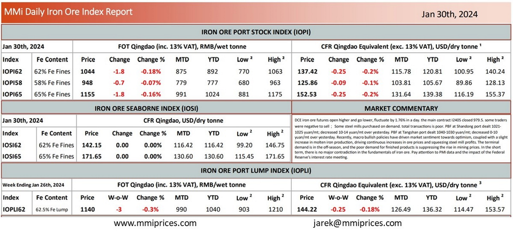

DCE iron ore futures open higher and go lower, fluctuate by 1.76% in a day. the main contract I2405closed 979.5. some traders were negative to sell； Some steel mills purchased on demand. total transactions is poor. PBF at Shandong port dealt 1021- 1025 yuan/mt; decreased 10-14 yuan/mt over yesterday. PBF at Tangshan port dealt 1040-1030 yuan/mt; decreased 0-10 yuan/mt over yesterday. Recently, macro bullish policies have driven market sentiment towards optimism, coupled with a slight increase in molten iron production, driving continuous increases in ore prices and squeezing steel mill profits. The terminal demand is in the off-season, and the poor demand for finished products is suppressing the rise in mining prices. In the short term, there is no major contradiction in the fundamentals of iron ore. Pay attention to PMI data and the impact of the Federal Reserve’s interest rate meeting.

Download PDFSource: Metals Market Index (MMi)